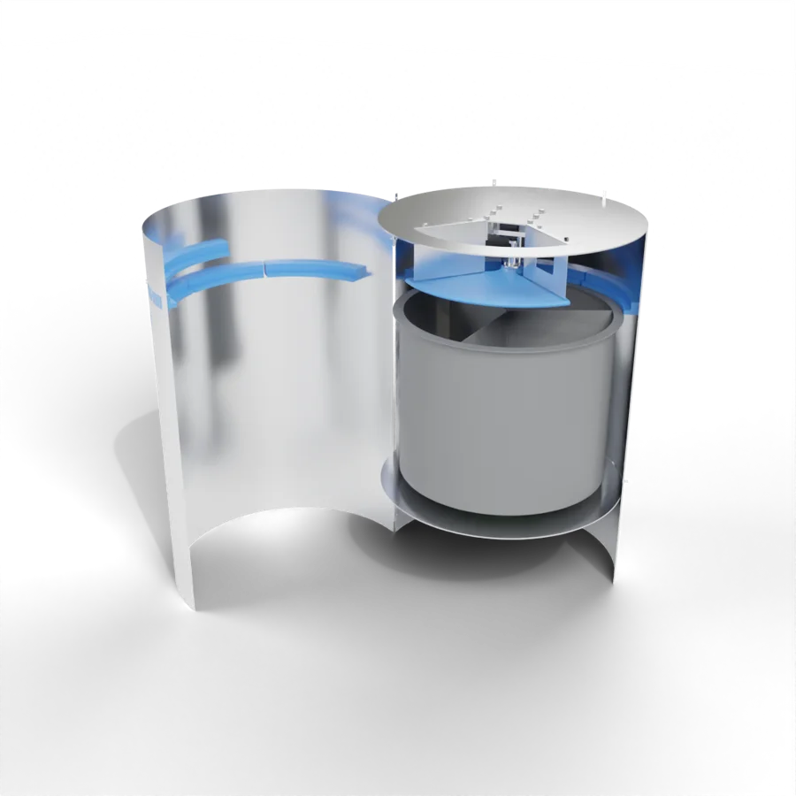

Ein Projekt von Wastelligence
SortIQ

Einwerfen statt Nachdenken. SortIQ ist ein Mistkübel, welcher den Müll selbst trennt: Gelber Sack, Altpapier oder Restmüll.
So funktioniert SortIQ
Man muss die Trennregeln nicht kennen. Es reicht, den Müll einzuwerfen, den Rest erledigt SortIQ in wenigen Sekunden.
Einwerfen
Der Gegenstand wird durch die Öffnung im Deckel in die beleuchtete Einwurfkammer geworfen.
Erkennen
Die Kamera des KI-Moduls nimmt ein Bild auf und ein selbst trainiertes Modell ordnet den Gegenstand einer Kategorie zu.
Sortieren
Ein Schrittmotor dreht das richtige Fach unter die Kammer. Anschließend öffnet sich die Bodenklappe.
Nachfragen
Wenn ein Gegenstand nicht sicher erkannt wird, wählt man die Kategorie am Touch-Display aus, statt dass er falsch landet.

Ein Einwurf, drei Fächer
Unter der Einwurfkammer sitzt ein drehbarer Behälter mit drei Fächern. Ein Schrittmotor dreht das richtige Fach unter die Kammer, dann öffnet sich die Bodenklappe.
Was SortIQ anders macht
Bestehende KI-Mistkübel sind teuer, brauchen eine Cloud oder zeigen nur an, wohin der Müll gehört. SortIQ sortiert selbst und bleibt dabei günstig.
Ohne Cloud
Die Erkennung läuft vollständig am Gerät. Die Fotos verlassen SortIQ nie, wodurch der Datenschutz gewährleistet ist.
Keine laufenden Kosten
Kein Abo und keine Serverkosten. Das Materialbudget für den Prototyp liegt unter 500 €.
Österreichische Mülltrennung
SortIQ ist auf die Trennregeln in Österreich ausgelegt und kann für weitere Kategorien neu trainiert werden.
Selbst sortierend
Ein Einwurf statt mehrerer Klappen. Dadurch ist SortIQ kompakt und einfach zu bedienen.
Füllstand im Blick
Das Display zeigt, wie voll die Fächer sind und wann sie geleert werden müssen.
Nachfragen statt raten
Bei unsicheren Gegenständen wird am Display nachgefragt. So landet nichts im falschen Fach.
Stand des Projektes
SortIQ entsteht als Diplomprojekt an der HTL Spengergasse. Bis April 2027 wird ein funktionsfähiger Prototyp gebaut und im Bezirksmuseum Hietzing getestet.
- Vorstudie und Konzeptabgeschlossen
- CAD-Konstruktionabgeschlossen
- KI-Modul angebundenabgeschlossen
- Bau des Prototyps und Training des KI-Modellsin Arbeit
- Test im Bezirksmuseum HietzingFrühjahr 2027
Interesse an SortIQ?
Ob Museum, Schule, Büro oder Gemeinde, wir freuen uns über Fragen, Feedback und Ideen für einen Test bei euch.
info@wastelligence.com